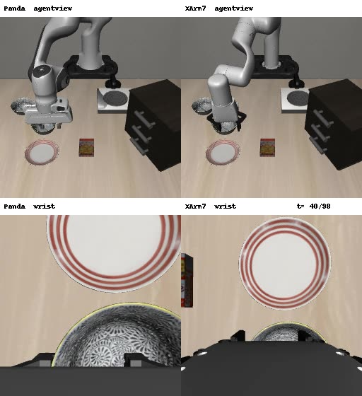

Cross-Embodiment Adaptation of VLA Policies: Reproducing DART on Franka Panda → xArm7
Transferring a π0.5 Vision-Language-Action policy trained on the Franka Panda to a new robot, the xArm7, from a single demonstration by reproducing DART (ECCV 2026) on LIBERO-Spatial.
DART builds a domain vector from the weight difference between a target-embodiment and a source-embodiment model, each fine-tuned from one demonstration, and adds it to the base policy with SVD-based subspace alignment. I generated a one-shot xArm7 demonstration by retargeting the Panda demo MimicGen-style (with rotation actions clipped to the training range), fine-tuned the source and target models, and evaluated the composed policy on the xArm7 across held-out tasks.
Success rate on held-out tasks (xArm7)
LIBERO-Spatial t1–t9, 180 episodes over two runs
One-shot fine-tuning overfits to the demonstration trajectory and fails on every held-out task, while the DART-composed policy outperforms both baselines. Note: α was selected using these evaluation tasks, so the DART number may be optimistic.
“Pick up the black bowl next to the ramekin and place it on the plate” · left: agent view, right: wrist camera